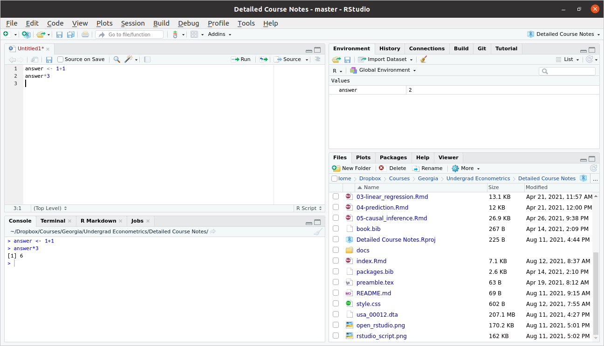

2.3 R Basics
Related Reading: IDS 2.1
In this section, we’ll start to work towards writing useful R code.
2.3.1 Objects
Related Reading: IDS 2.2
The very first step to writing code that can actually do something is to able to store things. In R, we store things in objects (perhaps sometimes I will also use the word variables).
Earlier, we used R to calculate \(1+1\). Let’s go back to the Source pane (top left pane in RStudio) and type
answer <- 1 + 1Press Ctrl+ENTER on this line to run it. You should see the same line down in the Console now.
Let’s think carefully about what is happening here
answeris the name of the variable (or object) that we are creating here.the
<-is the assignment operator. It means that we should assign whatever is on the right hand side of it to the variable that is on the left hand side of it1+1just computes \(1+1\) as we did earlier. Soon we will put more complicated expressions here.
You can think about the above code as computing \(1+1\) and then saving it in the variable answer.
Practice: Try creating variable called five_squared that is equal to \(5 \times 5\) (multiplication in R is done using the * symbol).
There are a number of reasons why you might like to create an object in R. Perhaps the main one is so that you can reuse it. Let’s try multiplying answer by \(3\).
answer*3
#> [1] 6If you wanted, you could also save this as its own variable too.
2.3.2 Workspace
Related Reading: IDS 2.2
Before we move on, I just want to show you what my workspace looks like now.

As we talked about above, you can see the code in my script in the Source pane in the top left. You can also see the code that I actually ran in the Console pane on the bottom left.
Now, take a look at the top right pane. You will see under the Environment tab that answer shows up there with a value of 2. The Environment tab keeps track of all the variables that you have created in your current session. A couple of other things that might be useful to point out there.
Later on in the class, we will often import data to work with. The “Import Dataset” button that is located in this top right pane is often useful for this.
Occasionally, you might get into the case where you have saved a bunch of variables and it would be helpful to “start over.” The broom in this pane will “clean” your workspace (this just means delete everything).
Side Comment: The assignment operator,
<-, is a “less than sign” followed by a “hyphen.” It’s often convenient though to use the keyboard shortcutAlt+-(i.e., hold downAltand press the hypen key) to insert it. You can also use an=for assignment, but this is less commonly done in R.